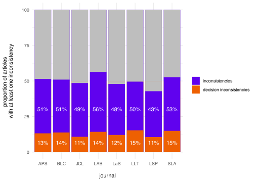
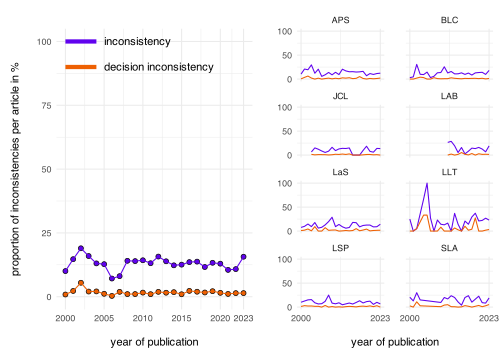

![]()
| Journal | eligible articles | assessible articles | assessible results | inconsistencies | decision inconsistencies |
|---|---|---|---|---|---|
| APS | 953 | 690 | 9570 | 1368 | 170 |
| BLC | 964 | 610 | 9093 | 1161 | 120 |
| JCL | 1109 | 529 | 6240 | 750 | 69 |
| LAB | 471 | 133 | 1719 | 234 | 25 |
| LLT | 421 | 111 | 919 | 201 | 61 |
| LSP | 695 | 376 | 4320 | 429 | 60 |
| LaS | 598 | 363 | 4717 | 552 | 86 |
| SLA | 593 | 247 | 2954 | 471 | 64 |
| Total | 5804 | 3059 | 39532 | 5166 | 655 |
Statistical Inconsistencies in Experimental Linguistics
Abstract
This document is a template.
Keywords
keyword1, keyword2, keyword3
Introduction
What we know about human language and its cognitive underpinnings is often informed by quantitative experimental data, data based on which we draw theoretically relevant inferences using common statistical frameworks. This inference should be transparent in order for us to critically evaluate the inference process and potentially spot and correct human errors. While in the recent years the quantitative sciences have seen repeated calls to become more transparent and reproducible by sharing their data and statistical protocols (Roettger 2019, etc.), such reproducible practices are still rare in the language sciences (Bochynska et al. 2023). This can lead to a accumulation of human errors that are left undetected and uncorrected. In the worst case scenario, these errors might lead to -at best- overconfident, -at worst- false theoretical conclusions. The present paper will present evidence that the published literature in experimental linguistics contains a concerning amount of statistical errors which warrant more rigorous data sharing practices.
The null-hypothesis significance testing (NHST) framework is, to date, the most dominant statistical framework that researchers use to test hypotheses in the language sciences (Sonderegger & Soskuthy 2024). These statistical tests are reported in specific formats which usually contain a test statistic, the degrees of freedom of that test, and the p value, representing the probability of observing the data (or more extreme data) given the null hypothesis (i.e. given that the test statistic is actually zero):
- F(1, 66) = 3.88, p < .05
Usually, researchers only have access to these reported indices in published research. In absence of access to the data, we are left with trusting the authors and these reported values. Whether that trust is warranted can be assessed, however. The three sets of indices in (1) have a clearly defined mathematical relationship and can thus be checked for consistency. An F test with the specified degrees of freedom and a test-statistic of 3.88 should in fact result in a p value of 0.053 which is larger, not smaller, than 0.5. Thus, (1) is in fact inconsistent. Possible reasons for this inconsistency are manifold: It could be a typo, i.e. the authors meant to use = or > rather than <. Or any of the numbers could be a typo. Sometimes an error might indicate erroneous rounding (e.g. 0.057 being round down to 0.05). Other times, there might be a more severe mistake in any step of the analytical pipeline. Without access to data and scripts, it remains unclear to the reader, what causes the inconsistency, but at the very least, our confidence in the statistical analysis should be decreased. Such inconsistencies can be particularly concerning if the calculated p value and the reported p values are not on the same side of the alpha threshold. In NHST, p values below a conventionalized alpha threshold of 0.05 are considered sufficiently inconsistent with the null hypothesis (significant). P values above that threshold are considered consistent with the null hypothesis and practically lead to rejecting the alternative hypothesis (not significant). In (1) above, the reported p value suggest a significant result, the p value derived from the degrees of freedom and the test statistic suggest a non significant result. In the following we refer to these inconsistencies as “decision inconsistency”. This form of inconsistency assessment can be automatically assessed if statistical tests are reported in an unambiguous format. Recently, a series of studies used such a automatic assessments to evaluate the prevalence of inconsistent statistical reporting in published psychological research (e.g. Nuijten et al. (2016), Nuijten and Polanin (2020), Green et al. (2018), Groß (2021)). Nuijten et al. (2016) found that around 50% of the articles with statistical results contained at least one inconsistencies and around 12.5% contained at least one “decision inconsistency”.
To assess the prevalence of statistical-reporting inconsistencies in experimental linguistics, the present paper conceptually replicates Nuijten et al. (2016) and assesses over 5000 articles published in 8 experimental linguistic journals published between 2000 and 2023.
We further assess whether the number of inconsistency differs across journals, whether it has changed over the course of the last 20 years and whether there is evidence for bias in these statistical-reporting inconsistencies.
Method
Statcheck
We used the R package statcheck (Version 1.4.1-beta.2; Nuijten & Epskamp, 2023) to automatically detect statistical-reporting inconsistencies. Statcheck works as follows: After converting pdf or html articles to plain text, statcheck searches for specific strings that correspond to a NHST result, using “regular expressions”. That way, statcheck can detect results of t tests, F tests, Z tests, χ2 tests, correlation tests, and Q tests as long as the test result fulfills three conditions: (a) the test result is reported completely including the test statistic, degrees of freedom (if applicable), and the p value; (b) the test result is in the body of the text, i.e. it usually misses results reported in tables; and (c) the test result is reported in American Psychological Association style (APA, 2019). Given these constraints, statcheck is estimated to detect roughly 60% of all reported NHST results (Nuijten et al., 2016) Statcheck uses the reported test statistic and degrees of freedom to recalculate the p value, compares the reported and recalculated p values and, if there is a mismatch, reports a comparison as an “inconsistency.” The algorithm takes into account that tests might have been performed as one-tailed by identifying the search strings “one-tailed,” “one-sided,” or “directional”. Moreover, statcheck counts p = .000 and p < .000 as inconsistent as p values of exactly zero are mathematically impossible and the APA manual (APA, 2019) advises to report very small p values as p < .001. Validity checks suggest that inter rater reliability between manual coding and statcheck is high, i.e. 0.76 for inconsistencies and 0.89 for decision inconsistencies (Nuijten et al., 2016). The overall accuracy of statcheck is estimated between 96.2% to 99.9% (Nuijten et al., 2017). We thus consider statcheck a valid, but rough proxy of statistical reporting inconsistencies.
Sample
As experimental linguistic research tends to statistically test hypotheses, we made a short-list of possible linguistic journals that are characterized by a large amount of experimental research. Using Kobrock and Roettger (2023) as a point of departure, we selected all linguistic journals with at least 10% of articles containing the search string “experiment*“. Out of these 37 journals, we selected only journals that urged APA formatting either in the main body of the text or specifically regarding statistics in the author guidelines, resulting in nine journals. Moreover, to download the pdfs, the articles had to be either accessible to us through the our library license, or open access, resulting in a final list of eight journals: Applied Psycholinguistics (APS), Bilingualism: Language and Cognition (BLC), Linguistic Approaches to Bilingualism (LAB), Language and Speech (LaS), Language Learning and Techology (LLT), Journal of Language and Social Psychology (LSP), Journal of Child Language (JCL), and Studies in Second Language Acquisition (SLA).
We included only original research articles within the publication years of 2000-2023, excluding any book reviews, response articles, commentaries, editorials, corrigenda, errata, cover files, advertisements, etc. Articles from LAB spanned 2011-2023, while the rest spanned 2000-2023. This procedure resulted in 5961 research articles. All 5961 articles were submitted to analysis, using Statcheck v1.5.0. 157 articles were not analyzable, and thus had to be removed from the pool, likely related to issues with rendering the Chi-Squared symbol being erroneously converted from .pdf to .txt.
Open data statement
All derived data and corresponding R scripts are available here: LINK. The original articles cannot be bulk shared due to distribution restrictions by the publishers. NEED TO FIGURE OUT A WAY
Results
Out of 5804 articles, 3059 contained statistical reporting that statcheck could assess (53%), containing 39532 assessible tests. 5166 were flagged as an inconsistency (13%) and 655 of which were considered decisions inconsistencies (1.7%) (see Table #). The proportion of inconsistencies ranged from 10 to 22% across journals (1 to 7% for decisions inconsistencies) (see Fig. 1) These rates appear to be stable across year of publication (see Fig. 2). On average, 53% of assessible articles contained one or more inconsistencies (journals range 43-56%) and 15% contained one or more decisions inconsistencies (journals range 11-15%).
When examining reported against their recalculated p values (see Fig. 3a), we can identify certain spatial patterns. First, the center of density of points lies toward the bottom left corner with more values reported closer to the alpha level. This makes sense since there is a documented publication bias in published quantitative articles, with hypotheses being much more often confirmed than not (REFERENCES). Of all inconsistencies that have been flagged as decisions inconsistencies (655), 57% represent cases in which a reported significant result (p < 0.05) is inconsistent with a non significant recalculated p value above 0.05.
Second, there is a group of points along the diagonal which corresponds to numerical smaller inconsistencies, some of which might be related to simple rounding errors or minor human error. However, comparing the diagonal to the black line, which represents a linear model predicting recalculated by reported p values, we can see a clear divergence of what is expected if inconsistencies are equally likely in both directions. The regression line has a flatter slope which means that on average, reported p values are lower than their recalculated counter parts. Looking closer at the range between 0 and 0.1, we can see even more structure (see Fig. 3b). There are notable “stripes” in the point distribution, corresponding to rounded values such as 0.001, 0.01, 0.02 etc. These errors might be due to either rounding errors or typos regarding the comparison sign. E.g. a p value that is reported as p = 0.05 with a recalculated value of 0.0561, might indicate erroneous rounding down or was intended to be reported as p > 0.05.


Discussion and Recommendations
References
Green, Christopher D, Sahir Abbas, Arlie Belliveau, Nataly Beribisky, Ian J Davidson, Julian DiGiovanni, Crystal Heidari, Shane M Martin, Eric Oosenbrug, and Linda M Wainewright. 2018. “Statcheck in Canada: What Proportion of CPA Journal Articles Contain Errors in the Reporting of p-Values?” Canadian Psychology/Psychologie Canadienne 59 (3): 203.
Groß, Thomas. 2021. “Fidelity of Statistical Reporting in 10 Years of Cyber Security User Studies.” In Socio-Technical Aspects in Security and Trust: 9th International Workshop, STAST 2019, Luxembourg City, Luxembourg, September 26, 2019, Revised Selected Papers 9, 3–26. Springer.
Kobrock, Kristina, and Timo Roettger. 2023. “Assessing the Replication Landscape in Experimental Linguistics.” Glossa Psycholinguistics 2 (1): 1–28.
Nuijten, Michèle B, Chris HJ Hartgerink, Marcel ALM Van Assen, Sacha Epskamp, and Jelte M Wicherts. 2016. “The Prevalence of Statistical Reporting Errors in Psychology (1985–2013).” Behavior Research Methods 48: 1205–26.
Nuijten, Michèle B, and Joshua R Polanin. 2020. “‘Statcheck’: Automatically Detect Statistical Reporting Inconsistencies to Increase Reproducibility of Meta-Analyses.” Research Synthesis Methods 11 (5): 574–79.